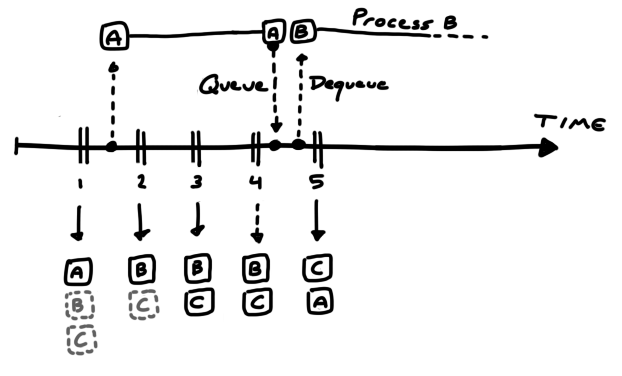

For the past few weeks I have been working with camera capture on Linux for a computer vision project: tracking Roomba robot vacuum cleaners from a drone. This is in preparation for my university team's entry in the annual International Aerial Robotics Competition (IARC) for autonomous drones. In the current challenge, which has been unsolved since 2014, participants must build a drone that can navigate a 20m x 20m indoor space by itself, without GPS, and herd ten Roombas from one side to the other through physical interaction. Sounds interesting? follow our blog at Ascend NTNU!
To stay afloat long enough and abide with the rules, the drones entering this competition tend to carry a "low-power" computer, such as the Odroid, the Intel NUC, or lately the Nvidia Jetson chips. These are embedded devices that can fit comfortably on a small (0.5 kg) to medium (1.5 kg) sized drone, while still being decent enough to do on-board image processing. Although these things are computational beasts compared to what we had ten or twenty years ago, they are too weak to be carelessly programmed with a disregard for performance. High performance is important because the speed of your processing algorithm puts a hard limit on the physical maneuvers and speeds your drone can attain.
For example, our team uses a 180 degree, 60 FPS fisheye-lens camera to detect and track Roombas seen below the drone. The algorithm that does the visual detection and tracking must run fast enough to provide input for the control loop in charge of following and landing on the Roombas (moving at a whopping 0.33 meters per second).
Making the algorithm fast is both a matter of doing as little work as possible, but also minimizing time spent getting images off the camera and into an appropriate format: the latter of which will be the focus of this post. I may do a follow-up on the algorithms, but for now I'll let you in on some tips and tricks I picked up regarding camera capture.
Before we focus on the real subject - doing camera capture quickly - let's look at how to do camera capture at all. Aside from writing a driver that communicates with the camera manually, we have several libraries that make life easier, the most popular ones at the time of writing being (probably) ffmpeg, gstreamer and v4l2.
ffmpeg and gstreamer can be considered more high-level of the three, in the sense that they provide a wrapper around v4l2 (on linux), but also because they provide streaming across applications on the same machine, over a local network, or even over the internet.
Streaming can be of great value early in development, especially if you have multiple team members who all use the camera. Then it can be a productivity boost, even if only streaming across applications on the same device, because your team members can develop and test their stuff independently first, before worrying about how to optimally share the camera data between your programs: testing the whole is easier if you have tested the parts first. You can also postpone running programs on the drone itself, even if the camera has been attached to it, by making it stream over local network onto your computer (or multiple computers at the same time).
v4l2 sticks out because it offers better control and more transparency: you decide how data is moved around in memory, you request the capture output format, and you do the decoding. This is useful if the above two libraries do not offer the level of control you want (i.e. like enabling H264 hardware decompression), or if you need to know precisely how long it takes from a frame is captured until it is delivered to your application.
There are a couple of introductions to v4l2 online: the official documentation is of great value, and served as background for the tips below, but can be dry if you're just getting started. There's some simple example code that does the bare minimum to get camera capture working, found on various blogs and github repositories. I'll add my usbcam.h library (a single header file in the style of Sean Barrett) to that pile, which hopefully serves as a fully functioning library, and also as a base that you can modify to your liking.
Now then, if you decide that you need the flexibility provided by v4l2, you'll want to keep reading for some tips that can be useful for real-time computer vision:
My runner-up titles for this section were "Don't copy that example code!" and "Read the manual!".
In v4l2 there are several modes by which you can read frames from the camera, but the one we will look at is the mmap method. In the mmap method, you and the camera share a set of buffers that the camera will write to and you will read from. By sharing them, with memory mapping (mmap), you avoid a potentially expensive memory copy from the camera to your application.
In setting up the mmap method you have a choice of how many buffers to request. Initially, I didn't know why I might care about that, and instead of reading the manual, I just left it at whatever number was in the example code I was shamelessly copying. It would be a whole year later before I (read the manual and) realized the purpose of these buffers, and also that the example code was not suited for our real-time computer vision application.
Suma sumarum, buffers work like this:
In the example code, the code would request a number of buffers (3 by default), queue them all, and tell the camera to start recording. It would then enter a loop where it waits for a new frame to dequeue (for reading), and makes it available for processing. After processing is done the buffer would be put back in the queue (for writing).
Given the rules above, it is evident that a problem occurs if the processing time per frame is too long (as it sometimes is with computer vision): if the processing takes too long, the camera can run out of buffers. This is because queued buffers can only be written to once, and causes subsequent frames to be dropped.
That is not the only problem: the buffer that is dequeued first is not necessarily the last one to be written to. In fact, on all the cameras I tested with, the order of dequeuing went from oldest to newest: i.e. if you queue buffers a, b, c, in that order, then the camera will write to them in the same order, and subsequent dequeues will give a, b, c.
This might not be what you want. In our case, if we take too long for whatever reason, we don't care about the old frames we missed; we want the latest information regardless. This is because, if you have an object detection algorithm that works on stand-alone frames, you want to always run it on the latest frame to get the most recent position of the object.
The solution to both problems relies on the behaviour of buffers. To get the most recent frame, make sure to dequeue all buffers and choose the most recent one.
Then, after picking the most recent buffer, queue all the buffers again.
This way, the number of queued buffers represents how much leeway your algorithm has in its processing time. You want to make sure you queue enough buffers for the camera to use while you are busy processing.
Let's look at an example with three buffers: A, B and C.
We start capturing and queue all three buffers. We then twiddle our thumbs and wait until a frame is ready. Once it arrives and we dequeue it, we spend a long time processing it with our fancy computer vision algorithm.
Alas, we spent so much time that the camera not only wrote to buffer B and C while we were busy, but when it was time to write the fourth frame, the camera had no more buffers to use, and, since it will not overwrite previous buffers, the frame was dropped from existence. That is why you want to request enough buffers.

But when we do finish processing, and we get to dequeue another buffer, we get buffer B; which is not the latest buffer (C) we could have gotten had we dequeued all of them, nor the latest frame (4) we could have gotten had we allocated more buffers.
In summary, to ensure that we get the latest frame possible, we need to:
Some cameras output in a somewhat raw format that can be converted to RGB quickly: i.e. the Bayer format, where each pixel contains information for one color channel only, and the other two channels are reconstructed from its neighbours. Another format is YUV, where the bits per pixel is reduced by taking advantage of properties of human perception and operating in a different color space.
Unfortunately, some cameras only give you the option of JPEG output, which is substantially more tricky to decompress quickly. Hence, you may want to rely on a library to do that for you. In my search I found two libraries that are particularly relevant: stb_image, and turbojpeg.
stb_image is super easy to use on any OS and is great for prototyping. But, since it's not as fast as turbojpeg, I would not use it for real-time stuff. Turbojpeg is unfortunately more involved than simply downloading a file from github and dropping it into your source directory, but the speed boost you get is worth the hassle.
I had a hard time finding out how to actually use turbojpeg: all google gave me were some example code from StackOverflow, and searching for the function names did not lead me to their documentation page. But, for prosperity, here's a link to it. You can find different versions under the TurboJPEG C API header. If you want a code example, you can either look at some of the Stackoverflow posts, or you can check out my usbcam.h repository, which contains a small snippet for doing JPEG to RGB decompression.
Once you've got that going, below are some tips that can speed up the decompression even further:
If your computer vision algorithm downsamples the image before processing it - such as in a neural network - you can specify the desired resolution to turbojpeg to avoid decompressing full resolution. Compared to decompressing in full resolution and downsampling afterwards, this significantly reduces decompression time and overall preprocessing time. Plus you get to remove your code that does downsampling!
As a general computer vision tip, you should also ask yourself if you can downsample the image, if you're not already. Do you really need to run that object detector at 1080p? Maybe the results are still acceptable when downsampling? Maybe they are better even due to the lowpass filtering that occurs (unless you just drop pixels while downsampling).
Another way to speed up decompression is to avoid generating the RGB output: JPEG do not store compressed RGB data, but instead it stores compressed YCbCr data, which is a format that is better for storing colors (to be viewed by humans) than RGB. YCbCr describes brightness (Y) and hue (CbCr). Hence, if you only need grayscale, you could use the Y component. Or, if you do need color, maybe CbCr would be better than RGB, since it is seperated from brightness.
You can request that turbojpeg perform the JPEG decompression but skip the color conversion step, by using the tjDecompressToYUV function, which gives you the brightness and hue components. Alternatively, you could extract only the luminance, by passing the TJPF_GRAY flag into the regular decompression function.
On my machine, decompressing with TJPF_GRAY was faster than decompressing to YCbCr, which was again faster than decompressing to RGB.
If you've got any tips that you would like to share, feel free to message me on Twitter and I'll include it here.
Thanks for reading!